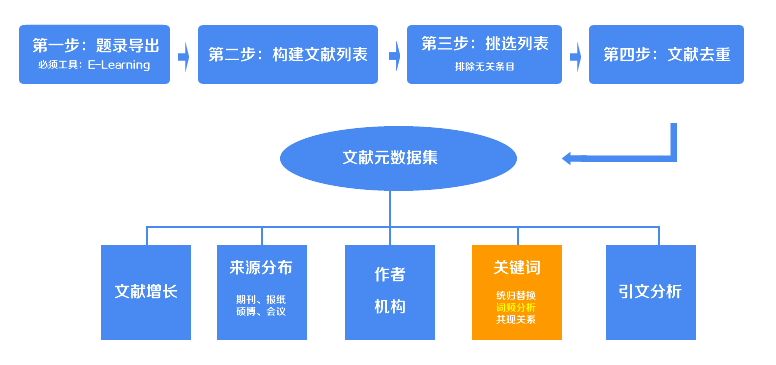

文献关键词（词频）统计工具

在上一步中，你已经获得了Excel格式的文献元数据集，现在我们利用元数据集中的关键词，对文献关键词做统计，统计出文献关键词的词频，并且利用Excel制作统计图。
打开上述的Excel文件，全选“关键词”那一列，复制。
复制好了吗？把复制好的内容直接黏贴到下面的文本框中。
和之前你做的一样，你将得到一个经过统计好的txt文档（documents_meta_data_guanjianci.txt），直接复制txt文档中的内容到一个excel中，利用Excel来实现数据的图形化。